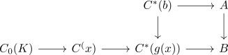

continuous bounded functions out of an connected, (half-)open intervall is a projective c star algebra
Proposition
Let $(0,1]$ or $K \subseteq \mathbb{R}$ be a (half-) open, connected invervall. Then $C_0(K)$ is a projective object (in the sense of preserving epimorphisms) in the category of C-star algebras.
Proof
Let $f:A \twoheadrightarrow B$ be an epimorphism of $C^*$ algebras and $g: C_0(K) \rightarrow B$ a map. Recall that $C_0(K)$ is generated by the polynomial $x$ and $1$ (cf. stone weierstrass), where $x$ is a self-adjoint/normal element, since $K \subseteq \mathbb{R}$. Now we can lift $g(x) \in A$ to a self-adjoint element $b$ under $g$, i.e. $f(b) = g(x)$.
This gives a diagram

where $C^*(b), C^*(g(x))$ are commutative algebras (cf. c star homomorphism restricts to generated c star homomorphisms). Of course, a lift to $C^*(b)$ suffices. Here $C^*(b) \rightarrow C^*(g(x)))$ is an epimorphism in the category of $C^*$ algebras (cf. morphism of C^* algebras restricts to an epimorphism on generated C^* algebras). Now both $C^*(b)$ and $C^*(g(x))$ are commutative, since both $b$ and $g(x)$ are normal.
Therefore we have reduced it to showing that $C_0(K)$ is a projective object in the category of commutative $C^*$ algebras. Here we can use gelfand duality for LCH_+ or $\mathrm{CH}_{*}$, so it suffices to show that $K$ is an injective object in the category LCH_+. This is equivalent to showing that $K^+$ or $[0,1]$ is an injective object in $\mathrm{CH}_+$. Since injective object in the coslice category $\mathrm{CH}_{*/}$ agree with injective objects in $\mathrm{CH}$ it suffices to show that $[0,1]$ is an injective object in $\mathrm{CH}$.
This is a reformulation of Tietzes extension theorem.